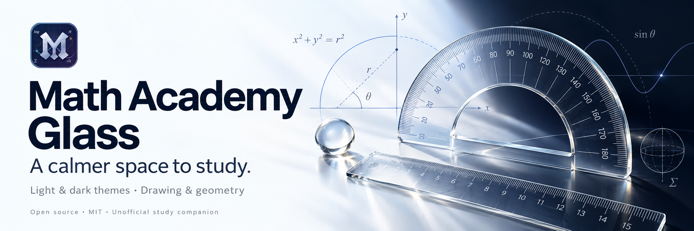

Find your light
Comfortable light and dark themes, readable lessons, and quiet glass surfaces. Follow your system appearance or switch whenever you like.
Free & open source · Chrome extension
Give Math Academy a clear glass appearance and a set of thoughtful tools for working through your next idea.
Light, dark, or your system appearance. Always your choice.

Made for the way you learn
Comfortable light and dark themes, readable lessons, and quiet glass surfaces. Follow your system appearance or switch whenever you like.
Draw, erase, and undo right on the page. Combine a ruler, a 180° or 360° protractor, and a compass to explore lengths and angles.
See local task timers and course counters. Send a selected instructional card to Chrome’s print preview to save it as a PDF.
Your work stays yours
Lesson content, drawings, and study counters stay in your browser. Only your two appearance preferences use Chrome sync. No ads, analytics, or extension-operated servers.
Read the privacy policyStart your next study session
Install from the public source while the Chrome Web Store listing is being prepared.
Download source ZIPKeep the extracted folder somewhere permanent.
Open chrome://extensions, turn on Developer mode, select Load unpacked, and choose the folder containing manifest.json.
Refresh Math Academy. Open the extension popup to choose a theme, then use the study-tools button on the page.
Requires Chrome 111 or newer. Learning features require your own Math Academy account and access to its content. This extension does not include a Math Academy subscription.